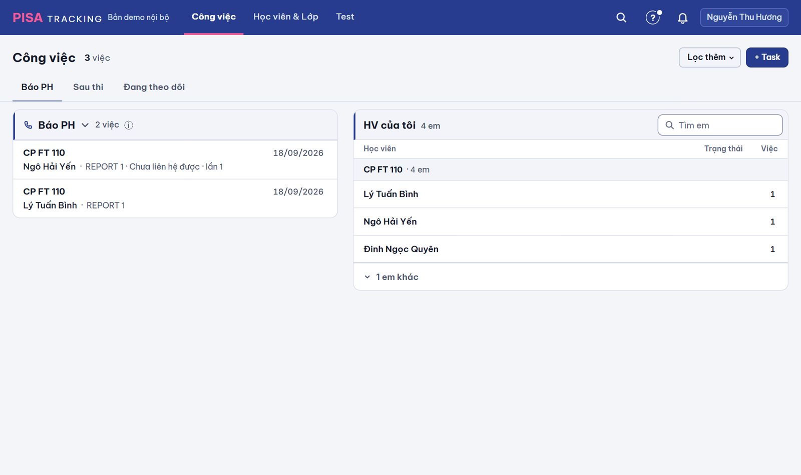
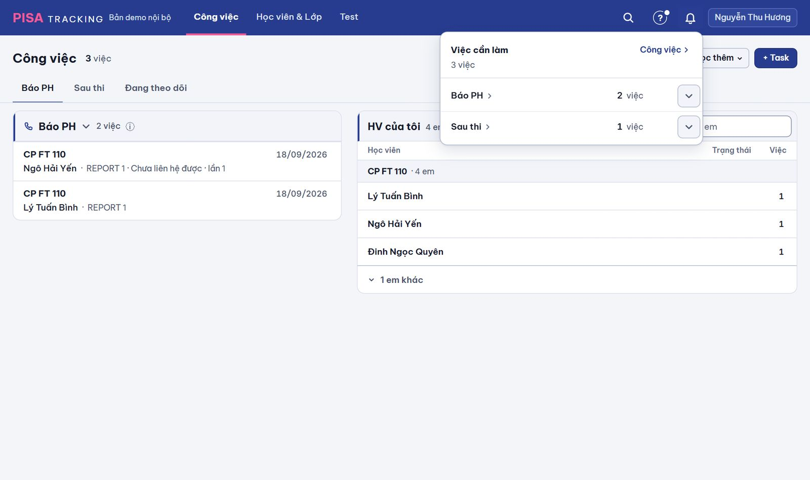
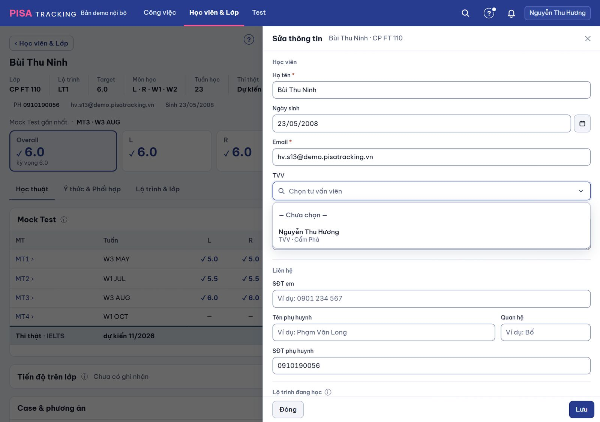
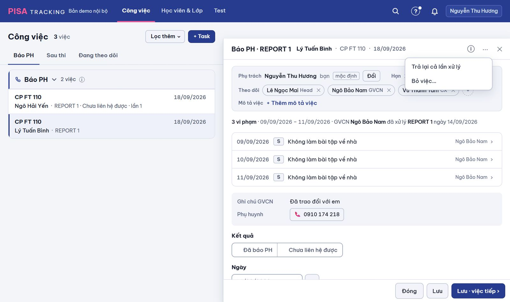
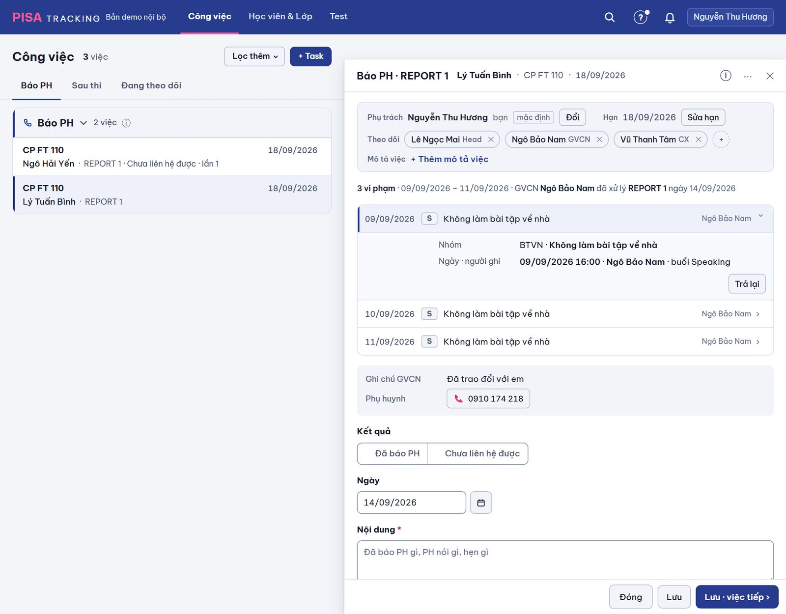
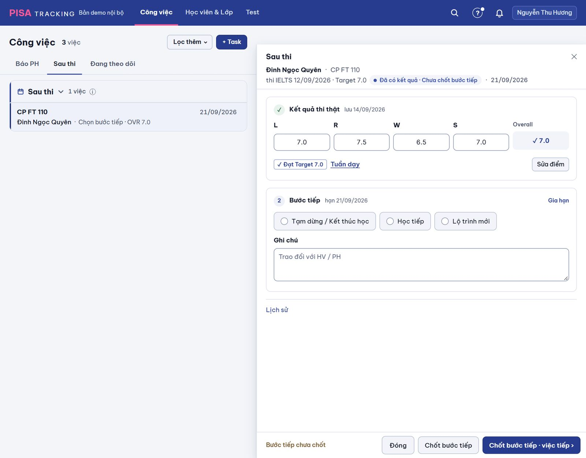
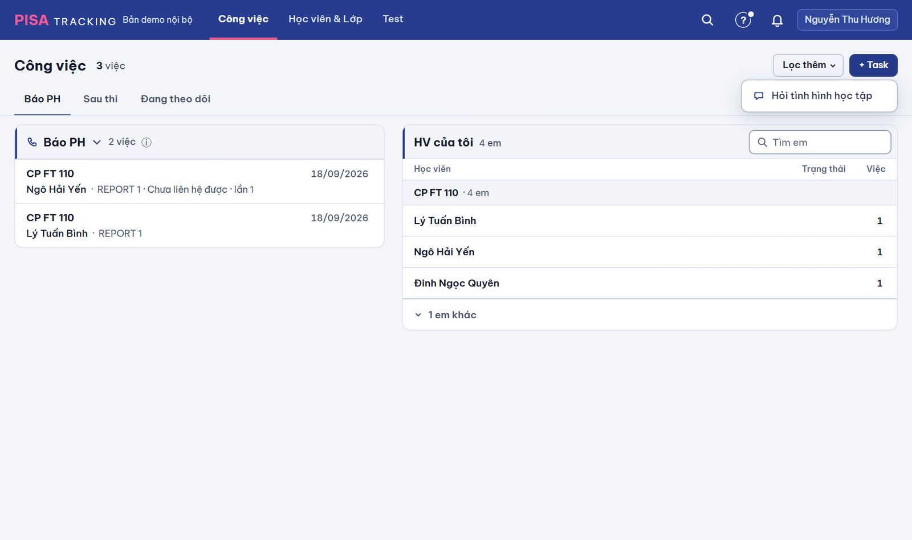
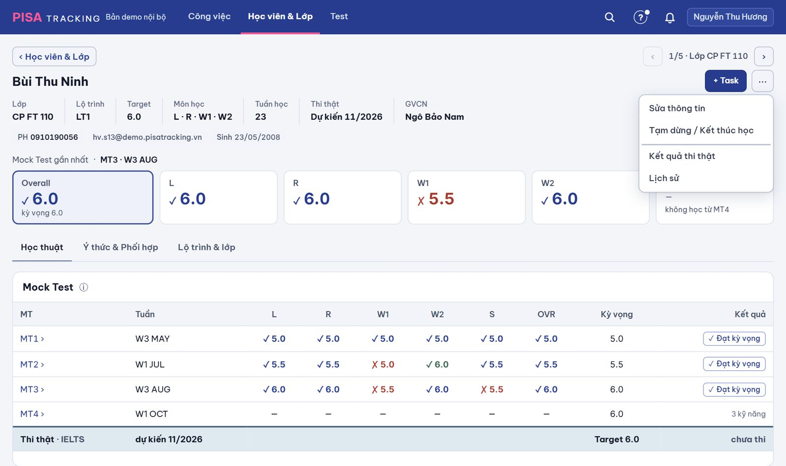
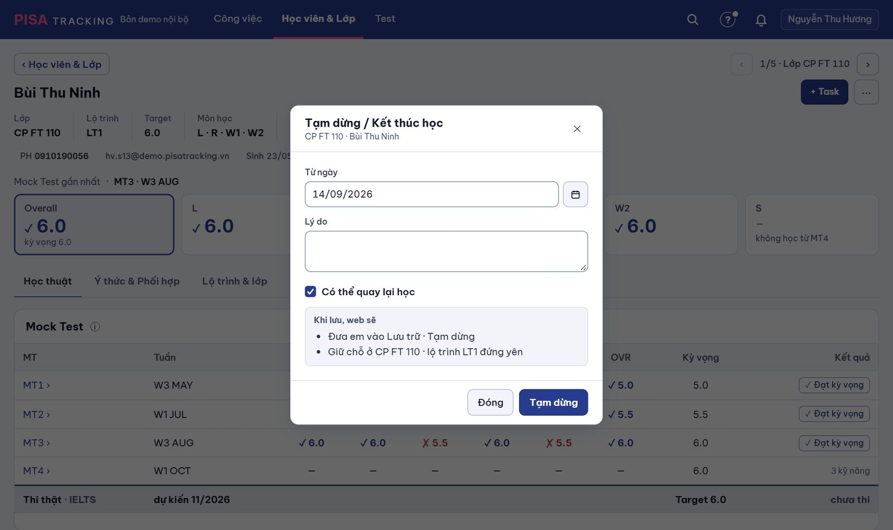
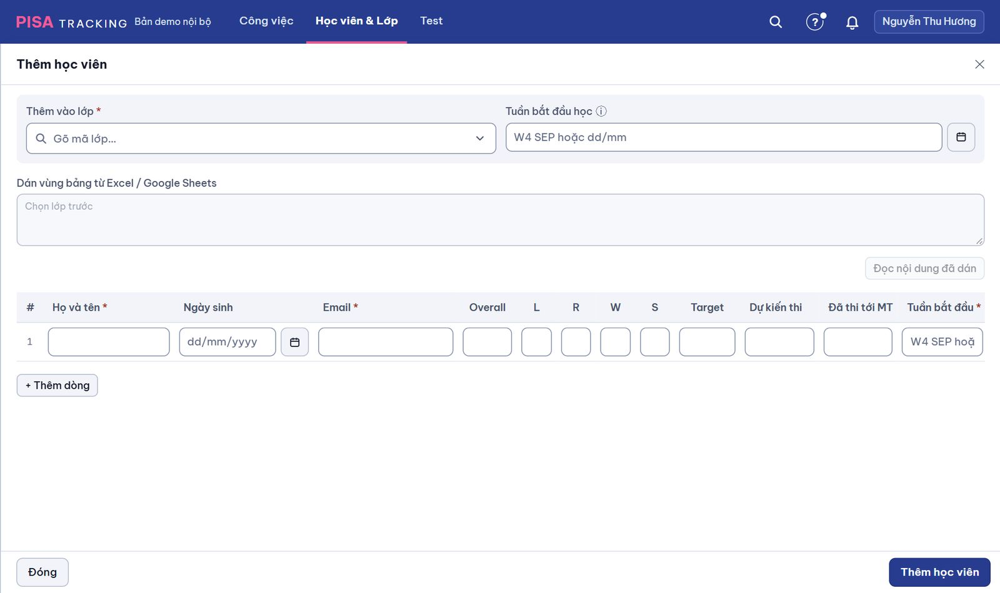

Bản 26/11/2026 — theo bản chính đang chạy. Chỗ có ô vàng “Sắp đổi” là phần đang làm, sẽ khác sau lần cập nhật tới.
Ảnh chụp từ bản demo: mọi tên người, lớp, số điện thoại là dữ liệu giả.
Đăng nhập là vào thẳng Công việc. Mọi việc của bạn nằm ở đây, chia tab Báo PH · Sau thi · Chốt ngày thi · Bổ sung hồ sơ · Đang theo dõi (tab nào không có việc thì ẩn). Việc quá hạn tô đỏ, nằm trên cùng.
Mỗi ngày 5–10 phút
Mở Công việc. Số cạnh chuông 🔔 = việc quá hạn + việc tới hạn hôm nay.
Làm tab Báo PH trước (hạn 5 ngày): gọi PH, ghi kết quả.
Tab Sau thi: em thi thật xong → nhập kết quả, rồi chọn bước tiếp (hạn 7 ngày).
Tab Chốt ngày thi, Bổ sung hồ sơ: không có hạn, làm khi rảnh trong ngày.
Khung HV của tôi bên phải: em nào có việc thì có số ở cột Việc, bấm là mở việc.
Mỗi tuần
Học viên & Lớp (ô Xem = HV của tôi): xem chip Thi tháng này · Sắp thi · Đã thi · chờ KQ · Có việc quá hạn.
Kiểm em mới đã có TVV chưa (mục 3.4). Em chưa có TVV thì mọi việc của em dồn về Head.
Tab Đang theo dõi: việc bạn đã giao người khác hoặc được thêm theo dõi.
Mỗi tháng
Xuất báo cáo PH của lớp (Excel / PDF) để gửi phụ huynh — mục 13.
Khi có em mới, lớp mới
Gán TVV cho em ngay (mục 3). Bổ sung ngày sinh, email, Target nếu thiếu.

Công việc của TVV: việc bên trái, HV của tôi bên phải; nút + Task ở góc phải.
2. Ba màn bạn dùng nhiều nhất
Công việc — danh sách việc. Bấm một dòng: panel mở bên phải, làm xong không rời trang. Nút Lưu · việc tiếp › lưu rồi mở luôn việc kế.
Học viên & Lớp — tìm em, lọc nhóm em, thêm học viên, xuất Excel. Bấm tên em mở hồ sơ.
Hồ sơ học viên — mọi thứ của một em. Nút ⋯ góc phải đầu hồ sơ: Sửa thông tin · Tạm dừng / Kết thúc học · Kết quả thi thật · Lịch sử.
Chuông 🔔: khối Việc cần làm (bấm để mở đúng tab) và khối Cập nhật (tin để biết). Tìm nhanh: phím / hoặc Ctrl K, gõ tên em hoặc mã lớp.

Chuông: Việc cần làm theo từng loại.
3. Gán TVV cho học viên (làm ngay từ đầu)
Vì sao quan trọng: app giao việc cho TVV theo ô TVV trong hồ sơ em. Em chưa gán TVV thì không vào “HV của tôi”, và mọi việc phía TVV (Báo PH, Chốt ngày thi, Sau thi, Bổ sung hồ sơ) dồn về Head chi nhánh. Ghi tên TVV vào ghi chú hay cột Excel không tính là đã gán.
Phát sinh
Em mới vào lớp, lớp mới mở, hoặc đổi TVV phụ trách.
Hạn
Không có hạn, nhưng làm ngay khi có em mới — trước khi em có việc đầu tiên.
Ai làm
TVV hoặc Head (CX cũng làm được). Chỉ chọn được TVV cùng chi nhánh của em.
Xong khi
Đầu hồ sơ em hiện ô TVV có tên; em có trong HV của tôi của TVV đó.
3.1. Gán cho một em
Mở hồ sơ em (bấm tên em ở Học viên & Lớp, hoặc tìm bằng /).
Bấm ⋯ góc phải đầu hồ sơ › Sửa thông tin.
Ô TVV: bấm, gõ vài chữ tên TVV, chọn tên trong danh sách.
Bấm Lưu ở chân panel.

Hồ sơ em › ⋯ › Sửa thông tin › ô TVV: chọn tên TVV rồi Lưu.
3.2. Gán cho nhiều em một lần (cả lớp)
Mở hồ sơ lớp (bấm mã lớp ở Học viên & Lớp).
Bấm ⋯ cạnh tên lớp › Sửa thông tin học viên: bảng cả lớp mở ra.
Tích ô đầu dòng các em cần gán (hoặc Chọn tất cả).
Trên thanh đầu bảng, ô TVV › chọn tên › bấm Áp cho n em. (Hoặc chọn từng ô ở cột TVV của từng em.)
Bấm Lưu góc dưới phải — một lần cho cả lớp.
Sửa thông tin học viên (cả lớp): thanh trên có ô TVV + “Áp cho n em”; cột TVV từng em. Em đầu bảng chưa có TVV.
3.3. Em mới thêm vào lớp
Bảng + Thêm học viên không có ô TVV, và dán Excel có cột “Tư vấn viên” cũng chưa gán TVV. Nên: thêm em xong → làm tiếp mục 3.2 cho lớp đó.
3.4. Kiểm em nào chưa có TVV
Mở Học viên & Lớp. Ô Xem: chọn chi nhánh (không để “HV của tôi”).
Ô Mọi TVV › chọn Chưa có TVV (số bên dưới = số em). Bấm Mở tất cả để thấy tên em.
Gán theo 3.1 hoặc 3.2.
Ô Mọi TVV: lọc theo từng TVV hoặc “Chưa có TVV”.
3.5. Đổi TVV, gán nhầm
Đổi TVV: làm như 3.1 / 3.2, chọn tên mới. Việc đang mở của em chuyển sang TVV mới, hạn giữ nguyên.
Gán nhầm: chọn lại tên đúng rồi Lưu. Bỏ trống: chọn — Chưa chọn —. Mọi lần đổi ghi ở ⋯ › Lịch sử của em.
Không thấy tên TVV trong danh sách: TVV đó chưa có tài khoản ở chi nhánh của em — nhờ Quản trị tạo.
4. Báo PH sau xử lý vi phạm
Phát sinh
GVCN lưu xử lý vi phạm của em (Report, WL…). Xử lý theo bậc mặc định → có việc ngay; cách khác → có việc khi Head duyệt hoặc máy tự chốt. Cũng có khi GV báo tình hình học tập cần báo PH, hoặc thu hồi cần báo lại.
Hạn
5 ngày lịch, tính cả ngày lưu (gồm T7, CN) — vd lưu T2 14/09 → hết T6 18/09.
Ở đâu
Công việc › Báo PH › bấm dòng em.
Xong khi
Đã lưu kết quả Đã báo PH kèm Nội dung. GVCN nhận tin.
Sai thì
Vừa lưu: bấm Hoàn tác trên thông báo, hoặc Sửa kết quả. Bỏ việc nhầm: Khôi phục.
4.1. Gọi và ghi kết quả
Đọc khối vi phạm: ngày, môn, lỗi, ai ghi; Ghi chú GVCN.
Bấm số ở dòng Phụ huynh 📞 để gọi (trên điện thoại gọi thẳng).
Kết quả: chọn Đã báo PH hoặc Chưa liên hệ được. Ngày mặc định hôm nay.
Panel Báo PH: khối Phụ trách · Hạn · Theo dõi ở đầu; vi phạm; số PH; Kết quả, Ngày, Nội dung.
4.2. Phụ huynh không nghe máy
Chọn Chưa liên hệ được, ghi Nội dung, Lưu. Việc vẫn mở, giữ hạn; dòng việc ghi “lần 1, lần 2…”. Gọi lại trước hạn. Cần thêm ngày thì sửa hạn (4.3).
4.3. Sửa hạn, bỏ việc
Sửa hạn: ở đầu panel, cạnh Hạn, bấm Sửa hạn › chọn ngày › lưu. Không cần lý do, không xin duyệt; Về mặc định để trả hạn gốc. TVV của em, TVV cùng chi nhánh, GVCN lớp em, Head sửa được.
Bỏ việc (không cần báo nữa): ⋯ góc trên panel › Bỏ việc… › chọn lý do. Bỏ nhầm: Hoàn tác hoặc Khôi phục.
Bỏ nút “Sửa hạn”: bấm thẳng vào ngày hạn là sửa được tại chỗ (người có quyền).

⋯ của panel: Trả lại cả lần xử lý · Bỏ việc…
4.4. Trả lại vi phạm ghi chưa đúng
Khi vi phạm GV ghi sai (sai ngày, sai em…) nên chưa thể báo PH:
Bấm › ở dòng vi phạm đó để mở chi tiết › Trả lại.
Gõ lý do trả lại (ít nhất 8 ký tự) › gửi. Cả lần xử lý sai: ⋯ › Trả lại cả lần xử lý (về GVCN).
GV nhận việc “Vi phạm bị trả lại”, hạn 3 ngày: sửa rồi gửi lại, giữ nguyên kèm trả lời, hoặc xoá vi phạm.
Trong lúc chờ: việc Báo PH ghi “Chờ GV sửa”, hạn Báo PH tạm dừng; GV gửi lại thì tính lại 5 ngày.
Trả nhầm: Hoàn tác (60 giây) hoặc Rút. Báo PH đã xong thì không trả lại được.

Bấm › ở một vi phạm: chi tiết mở ra, nút Trả lại ở góc phải.
Mọi việc báo PH (vi phạm, Trao đổi với gia đình khi em SOS, kết quả Progress / Final lớp thường) sẽ thành một loại việc “TVV báo PH”: cùng panel, hạn 5 ngày, Head + CX theo dõi. Làm xong phần mình, bạn theo dõi cả tuyến ở Đang theo dõi.
5. Báo PH sau Meeting CX/GĐCN
Phát sinh
Em SOS 3 sau lượt Mock; GVCN xác nhận cần Meeting CX/GĐCN. Có ba phần độc lập, không chờ nhau: Xếp lịch họp (BPXL) · Kết quả meeting (CX) · Báo PH (TVV).
Hạn
Ghi ở dòng việc (tính từ ngày GVCN xác nhận).
Ở đâu
Công việc › Báo PH, dòng Báo PH · Meeting CX/GĐCN.
Các bước
Bấm dòng › ở em chờ bạn bấm Ghi kết quả.
Chọn Đã báo PH / Chưa liên hệ được, Ngày, Nội dung › Lưu.
Xong khi
Đã lưu Đã báo PH. GV đọc được Nội dung ở Phối hợp SOS.
Sai thì
Bấm Sửa ở ô kết quả.
Chi nhánh chưa có BPXL: TVV của em tự Xếp lịch họp (ghi ngày giờ nếu muốn) rồi bấm Hoàn thành.
TVV nhập hộ Kết quả meeting cho CX được. Kết quả meeting xong thì phần Xếp lịch họp tự xong.
6. Chốt ngày thi
Phát sinh
Em Fast Track đã tới tháng Dự kiến thi mà chưa có ngày thi cụ thể.
Hạn
Không có hạn.
Ở đâu
Công việc › Chốt ngày thi › dòng em.
Các bước
Bấm Chốt ngày ở dòng.
Chọn Ngày thi; chưa chắc thì Dời tháng dự kiến.
Bấm Chốt ngày.
Xong khi
Em có ngày thi, hoặc đã dời sang tháng mới. Hôm sau ngày thi sẽ có việc Cập nhật kết quả thi thật.
Sai thì
Sửa ngày ở Học viên & Lớp › Lịch thi, hoặc hồ sơ em › Sửa thông tin (Dự kiến thi).
7. Sau thi: kết quả thi thật và Chọn bước tiếp
Hai việc nối nhau trong cùng một panel ở Công việc › Sau thi.
Phát sinh
① Hôm sau ngày thi của em FT → Cập nhật kết quả thi thật. ② Có kết quả → Chọn bước tiếp.
Hạn
① không hạn. ② 7 ngày từ ngày có kết quả; bấm Gia hạn nếu cần thêm.
Xong khi
Đủ L R W S (hoặc đã ghi Không thi) và đã Chốt bước tiếp.
Sai thì
Sai điểm: Sửa điểm. Vừa chốt bước tiếp: Hoàn tác trên thông báo; về sau: hồ sơ em › Bước tiếp… › Đổi.
Các bước
Bấm dòng em ở tab Sau thi.
Khối Kết quả thi thật: gõ L, R, W, S › Lưu điểm. Em không thi: bấm Không thi.
Khối Bước tiếp: chọn một trong ba:
Tạm dừng / Kết thúc học — em nghỉ; em vào Lưu trữ.
Học tiếp — giữ nguyên lộ trình, lớp, Target, Case; đổi Target hoặc lớp nếu cần.
Lộ trình mới — LT1 · LT2 · RF · Khác; Target gợi ý +1.0 nếu em đã đạt, sửa được.
Ghi chú (trao đổi với HV / PH) › Chốt bước tiếp (hoặc Chốt bước tiếp · việc tiếp ›).

Panel Sau thi: ① Kết quả thi thật (đã lưu) → ② Bước tiếp, hạn 21/09, nút Gia hạn.
Thi thật không tự kết thúc lộ trình — luôn phải chọn bước tiếp.
Nhập KQ cũng được từ hồ sơ em › ⋯ › Kết quả thi thật, kể cả khi em đã ở Lưu trữ.
Em chưa có TVV: Head làm. TVV cùng chi nhánh làm thay được từ hồ sơ em.
Em đã vào Lưu trữ thì không cần Chọn bước tiếp nữa (em quay lại thì bấm Quay lại học); ghi kết quả thi thật vẫn giữ.
8. Bổ sung hồ sơ thiếu
Phát sinh
Em của bạn thiếu Ngày sinh, Email, Tuần bắt đầu hoặc Target (em FT).
Hạn
Không có hạn. Nên làm sớm: có Target máy mới tính được kỳ vọng Mock Test của em.
Ở đâu
Công việc › Bổ sung hồ sơ.
Các bước
Bấm Bổ sung ở dòng: mở lần lượt từng em.
Điền ô còn thiếu (đổi Target thì ghi Lý do đổi Target).
Lưu · em tiếp › hoặc Bỏ qua ›.
Xong khi
Em đủ bốn thông tin; dòng tự mất.
Sai thì
Hoàn tác ngay sau khi lưu; về sau sửa lại ở Sửa thông tin, xem Lịch sử.
9. Hỏi tình hình học tập (+ Task)
Khi nào
PH hỏi, hoặc bạn cần biết em học thế nào trước khi gọi PH.
Ở đâu
Nút + Task (Công việc hoặc đầu hồ sơ em) › Hỏi tình hình học tập; hoặc ⋯ cuối dòng em ở Học viên & Lớp.
Các bước
Chọn em (đã điền sẵn nếu mở từ hồ sơ em).
Gõ câu hỏi (8–500 ký tự) › gửi. Việc về GVCN lớp em, hạn 3 ngày tính cả ngày hỏi.
Xong khi
GVCN ghi câu trả lời; bạn đọc ở tab Ý thức & Phối hợp của hồ sơ em. Em chuyển lớp thì GVCN lớp mới trả lời.
Sai thì
Ngay sau gửi: Hoàn tác (2 phút). Khi GVCN chưa trả lời: Sửa hoặc Rút câu hỏi.

+ Task › Hỏi tình hình học tập.
10. Đổi người làm, hạn, người theo dõi
Đầu panel việc Báo PH, Meeting, Hỏi tình hình có khối Phụ trách · Hạn · Theo dõi.
Phụ trách › Đổi: chọn người có tài khoản ở chi nhánh › Giao. Người nhận làm đúng việc đó. Về mặc định trả về người theo luật. Không cần lý do; nhầm thì Hoàn tác.
Theo dõi: + thêm người, ✕ bỏ người. Người theo dõi chỉ xem, nhận tin “Cập nhật” khi việc đổi người, đổi hạn, có kết quả.
Đã giao cho người khác mà bạn vẫn là TVV của em: bạn vẫn ghi được kết quả.
Việc bạn đang theo dõi: Công việc › Đang theo dõi.
11. Sửa thông tin, Target, Tạm dừng / Kết thúc học
Sửa thông tin, đổi Target, đổi lộ trình
Hồ sơ em › ⋯ › Sửa thông tin: họ tên, ngày sinh, email, TVV, liên hệ, Dự kiến thi, Target, Lộ trình đang học, Môn học.
Đổi Target: bắt buộc ghi Lý do đổi Target. Target mới tính từ hôm nay; kỳ vọng các lượt cũ giữ nguyên.
Đổi lộ trình (LT1 · LT2 · RF): MT đã có điểm giữ nguyên, MT chưa thi xếp lại.
Lưu. Mọi lần sửa có ở ⋯ › Lịch sử. Cả lớp: hồ sơ lớp › ⋯ › Sửa thông tin học viên.

Hồ sơ em: + Task và ⋯ (Sửa thông tin · Tạm dừng / Kết thúc học · Kết quả thi thật · Lịch sử).
Tạm dừng / Kết thúc học
Hồ sơ em › ⋯ › Tạm dừng / Kết thúc học.
Từ ngày, Lý do. Ô Có thể quay lại học: bật = Tạm dừng (giữ chỗ lớp, lộ trình đứng yên); tắt = Kết thúc học.
Bấm nút lưu (Tạm dừng / Kết thúc học). Em vào Lưu trữ; hạn của em dừng, không tính quá hạn.
Bấm nhầm: Hoàn tác ngay trên thông báo.
Em Tạm dừng đi học lại: Quay lại học (đầu hồ sơ em hoặc trang Lưu trữ). Em Kết thúc học: nhờ Head mở lại.
Tìm em đã lưu trữ: ô tìm › Tìm trong HV lưu trữ ›; hoặc Học viên & Lớp › Lưu trữ.

Hộp Tạm dừng / Kết thúc học: ô “Có thể quay lại học”.
Em vào Lưu trữ thì mọi việc của em dừng hẳn ở mọi nơi (Báo PH, Phối hợp, Case, chấm điểm…), không tính quá hạn; em Quay lại học thì chỉ có việc mới phát sinh sau đó. Ghi kết quả thi thật vẫn làm được.
12. Thêm lớp, thêm học viên
Học viên & Lớp › + Thêm học viên: chọn Thêm vào lớp, Tuần bắt đầu học (mặc định tuần này).
Gõ từng em, hoặc dán vùng bảng từ Excel / Google Sheets › Đọc nội dung đã dán. Dòng đỏ là dòng cần sửa.
Bấm Thêm học viên. Thiếu email vẫn lưu được (em sẽ có việc Bổ sung hồ sơ).
Gán TVV ngay cho các em vừa thêm — mục 3.2.
Lớp mới: nút + Lớp ở đầu Học viên & Lớp. Phân công giáo viên do Head làm.

Thêm học viên: lớp, tuần bắt đầu, ô dán Excel, bảng gõ tay. Không có cột TVV.
13. Báo cáo PH của lớp, xuất Excel
Hồ sơ lớp › tab Báo cáo PH (lớp FT, FOU, BE, ELE): chọn đợt › Xuất Excel lớp / Xuất PDF lớp; từng em ở cột Xuất. TVV chỉ xem và xuất — GV viết báo cáo.
Học viên & Lớp › Xuất Excel: mẫu Danh sách hoặc Báo cáo PH (chọn tháng), theo bộ lọc đang xem.
Lịch Test tuần (menu Test): TVV chỉ xem lịch và điểm.
14. Không phải việc của TVV — nhờ ai
Nhập điểm, Case, phương án
GV dạy môn đó (TVV chỉ xem ở tab Học thuật của hồ sơ em)
Ghi vi phạm, xử lý vi phạm
GV / GVCN
Phối hợp SOS
GVCN (TVV chỉ báo PH khi có Meeting CX/GĐCN)
Chuyển lớp, duyệt yêu cầu
Head
Xếp, dời lịch Test
Head / BPXL
Mở lại em đã Kết thúc học
Head
Tạo tài khoản, xoá học viên
Quản trị
Lưu không được (mất mạng): chân panel báo lỗi, chữ đang gõ vẫn giữ — bấm Thử lại, đừng đóng trình duyệt. Trong app có trang Hướng dẫn (nút ? trên thanh trên) để tra nhanh.